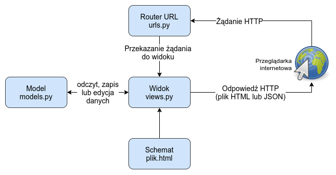

Django
Warto zajrzeć tutaj: https://docs.djangoproject.com/en/5.1/intro/tutorial01/
https://bulldogjob.pl/readme/architektura-django
Struktura projektu
Projekt w django tuż po stworzeniu (django-admin startproject mysite) wygląda mniej więcej tak:
mysite/
manage.py
mysite/
__init__.py
settings.py
urls.py
asgi.py
wsgi.py
mamy tu folder projektu w którym mamy poszczególne aplikacje. Na ten moment mamy tylko folder mysite zawierający ogólną konfigurację projektu,a w nim pliki takie jak:
- settings.py - konfiguracja projektu, jakie bazy danych mają byc używane, język projektu, moduły wykorzystywane w projekcie etc. link
- urls.py - deklaracje url opisujące co ma być dostepne pod jakimi ścieżkami link
Komendą manage.py startapp polls możemy dodać nową apkę o nazwie polls.
Struktura aplikcaji:
polls/
__init__.py
admin.py
apps.py
migrations/
__init__.py
models.py
tests.py
views.py
Pliki:
- admin.py - to jak ma wyglądać panel administracyjny dla danej apki
- urls.py - analogiczny do pliku urls.py w folderze opisującym projekt
- models.py - modele, które będą znajdować się naszych bazach danych
- views.py - poszczególne widoki znajdujące się w naszej aplikacji, możemy tutaj wystawić poszczególne API RESTowe, lub stronki w HTMLu
- tests.py

Dodatkowe pliki mogące się tu znajdować:
- serializers.py - link klasy wykorzystywane do serializacji modeli na inne formaty (np. json, lub xml)
Przy większych projektach warto rozsądne rozszerzenie powyższego schematu przykład
Zarządzanie i praca z projektem
Do tego wykorzystywany jest skrypcik manage.py znajdujący się w głównym folderze projektu.
Może byc on wykorzystywany chociażby do tworzenia (lub aktualizacji) tablic w bazie danych odpowiadających strukturom danych opisanych w modelach.
manage.py makemigrations # przygotowuje instrukcje potrzebne do zaktualizowania struktur w bazie
manage.py migrate #wykonanie migracji
Do wygodnej "zabawy" z danymi oraz klasami w bazie można użyć manage.py shell.
Migracje danych
Migracje służą nakładaniu zmian na bazę danych po zmianach w samym kodzie aplikacji (głównie w modelach). migracje tutorial
Na ogół są generowane automatycznie, jednak w niektórych wypadkach należy ręcznie dopisać trochę logiki do skryptów migrujących.
from django.db import migrations
def combine_names(apps, schema_editor):
# We can't import the Person model directly as it may be a newer
# version than this migration expects. We use the historical version.
Person = apps.get_model("yourappname", "Person")
for person in Person.objects.all():
person.name = f"{person.first_name} {person.last_name}"
person.save()
class Migration(migrations.Migration):
dependencies = [
("yourappname", "0001_initial"),
]
operations = [
migrations.RunPython(combine_names),
]
Modele danych
W django możemy w prosty sposób stworzyć własne struktury, które potem w automatyczny sposób będą mogły być mapowane na struktury znajdujące się w naszych klasycznych bazach danych. dokumnetacja
Wszystkie modele bazują na klasie django.db.models.Model.
from django.db import models
class Person(models.Model):
first_name = models.CharField(max_length=30)
last_name = models.CharField(max_length=30)
Definiowanie
Nowe modele powstają poprzez stworzenie klasy dziedziczącej po bazowej klasie W klasie tej zdefiniowane przez nas pola są rekordami.
Mamy tutaj typowe rodzaje pól takie jak:
- CharField - tekst dla krótkich/średnich określonych ciągów znakowych (nicki adresy etc), wymaga określenia
max_length. - TextField - nieustrukturyzowany tekst, który może być różnej długości (np wpisy na blogu, etc.)
- IntegerField
- ForeignKey - klucz obcy link
- OneToOneField - relacja jeden do jednego link
- ManyToManyField - relacja typu wiele do wielu, pozwala na bezpośrednie i pośrednie łączenie z wieloma rekordami
- GeneratedField - pole generowane automatycznie przez bazę danych
- FileField - pole do przechowywania plików (somyślnie przechowuje ono pliki w jakimś folderze, nie z bazie). Z zarządzeniem plikami wiąże się kilka dodatkowych zagadnień link
- etc.
Dla każdego pola możemy określić też dodatkowe parametry takie jak nullowalność, maksymalną długość (dla stringów), możliwe dozwolone wartości itp. Możemy też samodzielnie wybierać pole będące kluczem (chociaż na ogół te automatycznie dodawane wystarcza).
Null
Polami, które łatwo pomylić są null i blank. Pierwsze z nich określa, czy pole w bazie danych może przyjmować wartość null, drugie czy pole może być puste. Warto zwrócić uwagę, że null jest zdefiniowane dla baz danych, a blank dla formularzy. Podsumowując:
null=False, blank=False - domyślna konfiguracja. Wartość jest zawsze wymagana
null=True, blank=True - pole jest zawsze opcjonalne
null=False, blank=True - pole jest wymagane w bazie danych, ale nie w formularzu. Jest to wykorzystywane np przy polach typu string, które mogą być puste, ale nie mogą przyjmować wartości null (aby w razie braku był tam po prostu pusty string ""). Można tego używać także w wypadkach, kiedy chcemy samodzielnie generować zawartość tego pola dopiero w ramach metody save().
null=True, blank=False - pole jest opcjonalne w bazie danych, ale wymagane w formularzu. Może być wykorzystywane np w wypadku pól ForeignKey, które mogą zostać wyczyszczone np w wypadku usunięcia wskazywanego wcześniej obiektu.
Na podstawie tych klas możemy potem wygenerować tabele w baszej bazie (lub zaktualizować obecne, aby dopasowac) wykonując migrację (z użyciek spryptu manage.py).
W każdej klasie możemy dodatkowo określić klasę Meta pozwalającą określić dodatkowe informacje o naszym modelu, takie jak wymagania co do unikalności pól, tworzenie indeksów ze złączenia dwóch pól etc, nazwę okiektu, lub stworzyć klasę abstrakcyjną. pełna lista opcji
from django.db import models
class Ox(models.Model):
horn_length = models.IntegerField()
class Meta:
ordering = ["horn_length"]
verbose_name_plural = "oxen"
Metody
Dodatkowo dla modelu mozęmy zdefiniować własne metody. Warto zaimplementować chociażby __str__(), która jest używana do wypisywania obiektóe w panelu administratora, podobnie jak get_absolute_url(). Przydatny może być też dekorator @property.
W niektórych wypadkach możemy też chcieć nadpisać domyślne metody takie jak save(), czy też delete(), gdy chcemy np zablokować usuwanie jakichś elementów.
from django.db import models
class Blog(models.Model):
name = models.CharField(max_length=100)
tagline = models.TextField()
def save(self, *args, **kwargs):
if self.name == "Yoko Ono's blog":
return # Yoko shall never have her own blog!
else:
super().save(*args, **kwargs) # Call the "real" save() method.
Praca z modelami
Każda klasa ma artybut objects, jest obiekt klasy Manager. Służy on do wykonywania zapytań do bazy.
Przydatne metody do wykonywania zapytań:
People.objects.all()
People.objects.filter(name="Jan")
People.objects.exclude(surname="Kowalski)
# gdy chcemy uzyskać jeden wynik oraz wiemy, że taki wynik istnieje
# jeśli nie istnieje to dostaniemy wyjątek Entry.DoesNotExist
People.objects.get(pesel=12345678)
p1 = Poeple.objects.create(name="Marian",surname="Nowak") #stworzenie instancji i zapisanie modelu
p2 = People(name="Jan",surname="Kowalski")
p2.save() #zapisanie do bazy
Przykładowe metody:
- create() - tworzy i natychmiast zapisuje obiekt w bazie danych
- save() ręczne zapisywanie do bazy danych. Często wykorzystywane, kiedy przy pierwszych prokach tworzenia używamy konstruktora
Filtrowanie
Sposoby filtrowania nie ogarniczają się do podawania wartości oczekiwanych. Możemy też używać różnych prefixów. link argumenty w filtrach są podawane wg specjalnej składni.
People.objects.filter(surname__startswith="Kowalski)
Filtry można też łatwo ze sobą łączyć zanim przejdziemy do wykonania zapytania wykorzystując klasę Q.
Do łączenia możemy wykorzystać operatory: |= (lub) oraz &= (i).
from django.db.models import Q
q = Q()
if param_1 != 'all':
q &= Q(param_1__name=param_1)
if param_2 != 'all':
q &= Q(param_2__name=param_2)
class_var = ClassName.objects.filter(q)
#LUB
q = {}
if param_1 != 'all':
q.update({'param_1__name': param_1})
if param_2 != 'all':
q.update({'param_2__name': param_2})
class_var = ClassName.objects.filter(**q)
Przy odpowiednim wykorzystaniu kluczy obcych można także wykonywać proste filtry na łączeniach. link. Przydaje się tu argument related_name.
class Sessions(models.Model):
sessionId = models.AutoField(primary_key=True)
class Ip(models.Model):
ipId = models.AutoField(primary_key=True)
class Affiliation(models.Model):
affiliationId = models.AutoField(primary_key=True)
ip = models.ForeignKey("Ip", null=False, db_column="ipId")
session = models.ForeignKey(
"Sessions",
related_name="affiliation_session"
)
#potem można wołać
Sessions.objects.filter(affiliation_session__ip_id=X)
Na potrzeby filtrowania możemy także wygenerować nowe zmienne po których mozęmy szukać i sortować używając metody annotate(). link
from django.db.models import Count
# The top 5 publishers, in order by number of books.
>>> pubs = Publisher.objects.annotate(num_books=Count("book")).order_by("-num_books")[:5]
TODO więcej przykładów by się przydało
Praca z legacy badami danych
Czasami może pojawić się potrzeba pracy z już istniejącymi (starymi, lub zewnętrznymi) bazamidanych. W takim wypadku możemy zaimportować sobie taką bazę. django with legacy database
Możemy łatwo wygenerować modele dla takiej bazy
python manage.py inspectdb > models.py
Widoki
link - Writing your first Django app, part 3
Widok jest typem strony internetowej generowany przez django.
Widoki mogą być zwykłymi stronkami w HTMLu, mogą to być też widoki na jakieś dane. W wielu wypadkach pozwalają na swoiste zautomatyzowanie danej strony
Widok może być klasą lub funkcją zwracającą JSON-a, lub stronę w HTMLu.
class UserLogin(LoginView):
template_name = 'sjopinie_app/login.html'
from django.shortcuts import render
from .models import Question
def index(request):
latest_question_list = Question.objects.order_by('-pub_date')[:5]
#kontekst pozwala na późniejsze wykorzystywanie wartości w kodzie templatki
context = {'latest_question_list': latest_question_list}
return render(request, 'polls/index.html', context)
Przykładowy schemat strony dla powyższego przykładu
{% if latest_question_list %}
<ul>
{% for question in latest_question_list %}
<li><a href="/polls/{{ question.id }}/">{{ question.question_text }}</a></li>
{% endfor %}
</ul>
{% else %}
<p>No polls are available.</p>
{% endif %}
Dzięki przekazaniu wartości w kontekście templatka może korzystać z podanych wartości.
Prostym sposobem na dopisywanie logiki/wymagań do używanych widoków jest sotosowanie dekoratorów. View decorators. Dzięki nim możemy łątwo dodać np wymóg zalogowania, lub zastrzec typy zapytań.
from django.views.decorators.http import require_http_methods
@require_http_methods(["GET", "POST"])
def my_view(request):
# I can assume now that only GET or POST requests make it this far
# ...
pass
Tablice routingu urls.py
W pliku urls.py znajdującym się w folderze aplikacji możemy zdefiniować jakie widoki mają być dostępne pod jakimi ścieżkami.
from django.urls import path
from . import views
urlpatterns = [
# ex: /polls/
path('', views.index, name='index'),
# ex: /polls/5/
path('<int:question_id>/', views.detail, name='detail'),
# ex: /polls/5/results/
path('<int:question_id>/results/', views.results, name='results'),
# ex: /polls/5/vote/
path('<int:question_id>/vote/', views.vote, name='vote'),
]
Funkcja path() służy do określania ścieżki oraz funkcji, która ma je przetwarzać.
path(route, view, kwargs=None, name=None)
Pierwszy argument route określa ścieżkę wraz z parametrami, które mogą być przekazywane do funkcji widoku. Dokładniejsze informacje znajdują się tutaj
from django.urls import path
from . import views
urlpatterns = [
path("blog/", views.page),
path("blog/page<int:num>/", views.page),
]
# View (in blog/views.py)
def page(request, num=1):
# Output the appropriate page of blog entries, according to num.
Panel Administratora
Ogólny tutorial nt panelu admina, druga część tutoriala.
Jedną z funkcji Django ułatwiających development jest automatycznie generowany panel administracyjny. Dzięki niemu możemy zarządzać naszymi danymi bez konieczności pisania dodatkowych widoków.
Aby móc korzystać z panelu administracyjnego musimy zarejestrować nasze modele w pliku admin.py znajdującym się w folderze aplikacji.
from django.contrib import admin
from .models import Question
admin.site.register(Question)
Wtedy otrzymamy podstawowy widok dla naszego modelu, jednak możemy go dostosować do naszych potrzeb. Możemy dodawać nowe widoki, zmieniać wygląd, dodawać filtry, czy też zmieniać zachowanie. Wykorzystujemy do tego klasę dziedziczącą po admin.ModelAdmin.
from django.contrib import admin
from .models import Question
class QuestionAdmin(admin.ModelAdmin):
fields = ['pub_date', 'question_text']
admin.site.register(Question, QuestionAdmin)
Często edytowane pola dla tej klasy to:
fields- określa jakie pola mają być wyświetlane w panelu administracyjnymextra_kwargs- pozwala na dodanie dodatkowych argumentów dla konstruktorów poszczególnych pól linklist_display- określa jakie kolumny mają być wyświetlane w zbiorczej liście obiektówlist_filter- określa jakie filtry mają być dostępnesearch_fields- określa jakie pola mają być używane do wyszukiwania (nad listą będzie wyszukiwarka, która może korzystać z tych pól)readonly_fields- określa pola tylko do odczytu (dodatkowo można opisać funkcje, które je uzyskują).class PersonAdmin(admin.ModelAdmin): readonly_fields = ["address_report"] # description functions like a model field's verbose_name @admin.display(description="Address") def address_report(self, instance): return instance.address
Panel administratora pozwala także wykonywać różne akcje na obiektach z widoku listy. Możemy je dodawać samodzielnie, lub korzystać z gotowych akcji. link
from django.contrib import admin
from .models import Person
class PersonAdmin(admin.ModelAdmin):
list_display = ('name', 'age', 'is_adult')
actions = ['make_adult']
@admin.action(description='Make selected people adults')
def make_adult(self, request, queryset):
queryset.update(is_adult=True)
REST API
Do pracy z API RESTowym zaleca się użycie specjalnego frameworka https://www.django-rest-framework.org/tutorial/quickstart/
Serializacja
Serializacja to proces konwertowania danych z modelu na format, który może być łatwo przesłany przez sieć. W Django REST Framework serializatory są używane do konwersji obiektów modelu na JSON, XML lub inny format, który może być łatwo przesłany przez sieć.
from rest_framework import serializers
#podstawowy serializator
class UserSerializer(serializers.Serializer):
email = serializers.EmailField()
username = serializers.CharField(max_length=100)
class SubjectSerializer(serializers.ModelSerializer):
class Meta:
model = Subject
fields = ['name', 'ects', 'semester']
Wyróżniamy kilka typów serializatorów:
ModelSerializer- najprostszy sposób na stworzenie serializatora, który będzie działał z modelem, a w wypadku relacji z innymi modelami będzie podawał ich kluczeHyperlinkedModelSerializer- podobny do powyższego, ale zamiast kluczy podaje linki do tych modeli- Serializer - pozwala na pełną kontrolę nad tym, jak dane są serializowane (tutaj trzeba ręcznie podawać pola)
Serializatory mogą być używane do serializacji pojedynczych obiektów, list obiektów, czy też do walidacji danych.
Implementują one metody create(), update(), save(), delete(), validate(), to_representation(), to_internal_value(), is_valid(), errors oraz data. Modyfikacja tych metod pozwala na dostosowanie serializatora do naszych potrzeb.
Podklasa Meta
Do określania właściwości tych serializatorów można użyć wewnętrznej klasy Meta. Może zawierać ona takie pola jak:
model- model, który ma być serializowanyfields- lista pól, które mają być serializowane (np.fields = '__all__'po prostu przekazuje wszystkie pole z modelu)exclude- lista pól, które mają być pominięteread_only_fields- lista pól, które mają być tylko do odczytudepth- Jeśli chcemy otrzymać pełną reprezentację dla relacji (zamiast samego klucz lub linku) możemy użyćdepthw klasie Meta, albo samodzielnie podać pole (np.user = UserSerializer).
Ręczne przypisywanie pól
W ramach klas serializujących takich jak ModelSerializer możemy ręcznie określać niektóre pola korzystając klas typu Field. Jest sporo pól dla typowych dla poszczególnych typów danych, jak np CharField, IntegerField etc.
Przed użyciem warto przejrzeć wspólne argumenty dla tych klas. Jednym z bardziej użytecznych jest tutaj np argument source, który pozwala na określenie z jakiego pola tego lub powiązanego modelu ma być pobierana wartość.
class CommentSerializer(serializers.ModelSerializer):
full_name = serializers.CharField(source='user.full_name') # pobieranie wartości nazwy od użytkownika, który wrzucił komentarz
class Meta:
model = Comment
fields = ['id', 'full_name', 'content']
Warte uwagi są takie klasy jak:
- serializers.SerializerMethodField - pozwala na pobranie wartości pola z metody
class UserSerializer(serializers.ModelSerializer): days_since_joined = serializers.SerializerMethodField() #wartość pobierana z metody get_ + nazwa pola class Meta: model = User fields = '__all__' def get_days_since_joined(self, obj): return (now() - obj.date_joined).days - serializers.ReadOnlyField - pole tylko do odczytu automarycznie pobierane z modelu. Jest ono domyślnie używane przez ModelSerializer kiedy pracujemy z atrybutami (np. polami klasy, które nie są modelem a jedynie mają wartość
property), a nie elementami modelu.
Widoki dla RESTa
Używanie widoków pozwala łatwo zautomatyzować wyświetlanie danych. Za jednym zamachem możemy wystawić API reagujące na wszystkie typy zapytań (GET, PUT, POST, DELETE)
Można do tego wykorzystać na przykład własną klasę dziedziczącą po viewsets.ModelViewSet. Dzięki temu dostaniemy nie tylko "gołe" API, lecz także django wygeneruje interfejs sieciowy do korzystania z tego API, w razie zgdybyśmy otowrzyli go w przeglądarce.
from rest_framework import viewsets
#prosty widok na listę przedmiotów posortowanych alfabetycznie
class SubjectViewSet(viewsets.ModelViewSet):
queryset = Subject.objects.all().order_by('name')
serializer_class = SubjectSerializer
# tu już nieco bardziej skomplikowany widok, reagujący na podawane parametry
# Przykładowa ścieżka: lecturers/?name=Marian
class LecturerViewSet(viewsets.ModelViewSet):
serializer_class = LecturerSerializer
def get_queryset(self):
lecturer_name = self.request.query_params.get('name')
queryset = Lecturer.objects.filter(name=lecturer_name)
return queryset
Jednak nie każdy widok musi odzwierciedlać jakąś konkretną klasę. Możemy też stworzyć widok, który będzie reagował na konkretne zapytania. DO tego używamy klasy APIView z modułu rest_framework.views.
from rest_framework import views
from rest_framework.response import Response
class ExampleView(views.APIView):
def get(self, request, format=None):
content = {
'status': 'request was permitted'
}
return Response(content)
Dodawanie widoków do ścieżek
Widoki REST-owe dodajemy do urlpatterns wykorzystując routery.
from rest_framework import routers
router = routers.SimpleRouter()
router.register(r'users', UserViewSet)
router.register(r'accounts', AccountViewSet)
urlpatterns = router.urls
Pozwalają one na automatyczne generowanie wielu endpointów dla wybranego widoku.
Dodatkowo nadal możemy tutaj korzystać z parametrów w ścieżkach
class ClientRequests(ModelsViewSet):
serializer_class = serializers.ClientRequestSerializer
def get_queryset(self):
return models.ClientRequest.objects.filter(cliend_id=self.kwargs.get('client_id')
## w pliku urls
router.register(
r'(?P<client_id>\d+)/requests',
views.ClientRequests,
Więcej o widokach dla modeli ModelViewSet
Dla widoków takich jak ModelViewSet lub ReadOnlyModelViewSet możemy wyróżnić kilka rodzajów akcji:
- list - zwraca listę obiektów
- create - tworzy nowy obiekt
- retrieve - zwraca pojedynczy obiekt
- update - aktualizuje obiekt
- partial_update - aktualizuje część obiektu
- destroy - usuwa obiekt
Domyślnie te akcje są przypisane do odpowiednich metod HTTP (GET, POST, PUT, PATCH, DELETE). Możemy je jednak nadpisać, lub dodać własne akcje.
from rest_framework import viewsets
from rest_framework.response import Response
class SubjectViewSet(viewsets.ModelViewSet):
queryset = Subject.objects.all().order_by('name')
serializer_class = SubjectSerializer
def list(self, request):
queryset = self.get_queryset()
serializer = SubjectSerializer(queryset, many=True)
return Response(serializer.data)
def create(self, request):
# Do something special here
return super().create(request)
Filtrowanie widoków
Ręczne pisanie querysetów dla poszczególnych widoków może być nużące. Używając niektórych mechanizmów możemy zautomatyzować chociażby filtrowanie danych. Uzywa się do tego biblioteki django-filter. Charakteryzuje się ona min. dobrą integracją z REST frameworkiem.
import django_filters
from django_filters import rest_framework as filters
class ProductFilter(django_filters.FilterSet):
name = django_filters.CharFilter(lookup_expr='iexact')
class Meta:
model = Product
fields = ['price', 'release_date']
class ProductViewSet(viewsets.ModelViewSet):
queryset = Product.objects.all()
serializer_class = ProductSerializer
filterset_class = ProductFilter
filter_backends = (filters.DjangoFilterBackend,) # podpinanie widoku pod bibliotekę
Tak przygotowany widok będzie reagował na parametry przekazywane w zapytaniu. W powyższym przykładzie jeśli podamy parametr name to zwróci nam tylko te produkty, które mają dokładnie taką nazwę. Opcje filtrowania pojawią się także w dokumentacji OpenAPI.
OpenAPI Schema
OpenAPI jest standardem dokumentowania API RESTowych. W naszym projekcie Django możemy łatwo go generować używając generatora specyfikacji OpenAPI oraz jakiegoś UIa. Można użyć tutaj generowania w ramach REST frameworka lub użyć oddzielnej biblioteki, która to zrobi, takiej jak drf-spectacular.
Po wygenerowaniu schematu endpointów można użyć SWAGGER-UI do wyświetlenia ich w wygodny i interaktywny sposób.
Mając istniejący plik openapi.json możemy go łatwo wyświetlić w przeglądarce.
Przykłądowa komenda dockera do uruchomienia swagger-ui dla danego pliku:
docker run -p 80:8080 -e SWAGGER_JSON=/folder/openapi.json -v /tmp/tmp:/folder swaggerapi/swagger-ui
DRF-spectacular
Użycie tej biblioteki jest dokładnie opisane w dokumentacji
Standardowe użycie opiera się na użyciu dekoratora @extend_schema:
Dla zwykłego endpointa będącego funkcją trzeba dodać jeszcze dekorator @api_view
from enum import Enum
from django.http import JsonResponse
from rest_framework import serializers
from rest_framework.decorators import api_view
from rest_framework.request import HttpRequest
from drf_spectacular.utils import extend_schema, inline_serializer
class Status(Enum):
UPLOADING = "UPLOADING"
FINISHED = "FINISHED"
ERROR = "ERROR"
@extend_schema(
methods=["GET"],
responses={
200: inline_serializer(
"USB status",
{
"status": serializers.ChoiceField(
choices=[x.name for x in list(Status)]
)
},
),
},
)
@api_view(["GET"]) # MUSI być poniżej extend schema, aby z metody zrobić widok
def status(request: HttpRequest, *args, **kwargs) -> JsonResponse:
#implementacja
Testy
Django może być testowane automatycznie z wykorzystaniem różnych frameworków do testowania, jednak domyślnym jest unittest. link
Domyślną klasą do testowania jest django.test.TestCase, które jest subklasą unittest.TestCase.
from django.test import TestCase
from myapp.models import Animal
class AnimalTestCase(TestCase):
def setUp(self):
Animal.objects.create(name="lion", sound="roar")
Animal.objects.create(name="cat", sound="meow")
def test_animals_can_speak(self):
"""Animals that can speak are correctly identified"""
lion = Animal.objects.get(name="lion")
cat = Animal.objects.get(name="cat")
self.assertEqual(lion.speak(), 'The lion says "roar"')
self.assertEqual(cat.speak(), 'The cat says "meow"')
Testy uruchamiane są za pomocą manage.py test.
Na potrzeby testów tworzona jest tymczasowa testowa baza danych, która jest kasowana po zakończeniu testów. Możliwe jest jednak zachowanie bazy danych po testach. test --keepdb.
Inne
Praca z użytkownikami
Django pozwala włatwy sposób dodać uzytkowników do naszej aplikacji. link
Możemy tutaj uzyć gotowego modelu django.contrib.auth.models.User. Jeśli ten obiekt nam nie pasuje, zawsze możemy go przystosować do swoich potrzeb.
Do zalogowania uzytkownika z pomocą włanego formularza możemy wykorzystać metodę authenticate.
from django.contrib.auth import authenticate
user = authenticate(username='john', password='secret')
if user is not None:
# A backend authenticated the credentials
else:
# No backend authenticated the credentials
Potem będziemy mogli sprawdzać przychodzące żądania pod kątem tego, czy pochodzą od jakiegoś użytkownika.
if request.user.is_authenticated:
# Do something for authenticated users.
...
else:
# Do something for anonymous users.
...
Dla prostego zastrzegania treści tylko dla użytkowników możemy używać dekoratorów.
# dla funkcji
from django.contrib.auth.decorators import login_required
@login_required
def my_view(request):
...
#dla klas widoków
from django.contrib.auth.mixins import LoginRequiredMixin
class MyView(LoginRequiredMixin, View):
login_url = '/login/'
redirect_field_name = 'redirect_to'
# dla innych wypadków np w serializerze
self.context['request'].user
Możemy także wprowadzać zmiany bezpośrednio na poziomie szablonów.
{% if user.is_authenticated %}
<h1>Witaj {{user.get_username}}</h1>
{% else %}
<h1>Witaj nieznajomy</h1>
{% endif %}
Używając tych mechanizmów możemy także tworzyć grupy użytkowników z różnymi uprawnieniami.
Formularze
Formularze są jednym z najpopularniejszych sposobów na zbieranie danych od użytkowników. Django jest wyposażone w kilka mechanizmów wspomagających pracę z nimi. (omówienie formularzy w django, dokumentacja mozilli)
Formularze możemy tworzyć ręcznie umieszczasjąc je bezpośrednio w schemacie strony
<form action="/your-name/" method="post">
<label for="your_name">Your name: </label>
<input
id="your_name"
type="text"
name="your_name"
value="{{ current_name }}"
/>
<input type="submit" value="OK" />
</form>
Możemy też do tego wykorzystać klasę Form, która sama wygeneruje nam formularz.
from django import forms
class NameForm(forms.Form):
your_name = forms.CharField(label='Your name', max_length=100)
Następnie łączymy ten formularz z widokiem, który go obsługuje.(W przykładzie poniżej żądanie jest obsługiwane przez ten sam widok, który udostępnia formularz)
from django.http import HttpResponseRedirect
from django.shortcuts import render
from .forms import NameForm
def get_name(request):
# if this is a POST request we need to process the form data
if request.method == 'POST':
# create a form instance and populate it with data from the request:
form = NameForm(request.POST)
# check whether it's valid:
if form.is_valid():
# process the data in form.cleaned_data as required
# ...
# redirect to a new URL:
return HttpResponseRedirect('/thanks/')
# if a GET (or any other method) we'll create a blank form
else:
form = NameForm()
return render(request, 'name.html', {'form': form})
Wykorzystany schemat name.html:
<form action="/your-name/" method="post">
{% csrf_token %} {{ form }}
<input type="submit" value="Submit" />
</form>
csrf_token jest sposobem na użycie ochrony przeciwko CSRF
Kolejkowanie zadań
Jednym z brakujących elementów w Django jest przetwarzanie większych zadań w tle. Możemy to zrobić z użyciem biblioteki Celery bądź Django Q2 (Q1 jest porzucone).
Prostszym z tych rozwiązań jest Django Q2, które pozwala na łatwe dodawanie zadań do kolejki, a także na ich monitorowanie. Poza tym jest dobrze zintegrowane z Django.
Po dodaniu Django Q2 do projektu, możemy dodać zadanie do kolejki w prosty sposób.
from django_q.tasks import async_task, schedule
# do kolejki zostanie dodane zadanie, które zostanie wykonane w tle
async_task('myapp.tasks.my_task', 10) #TODO sprawdzenie czy to dobre API
# do bazy danych zostanie dodane zadanie, które zostanie wykonane za 10 sekund przez oddzielnego workera
# uruchamianego za pomocą `python manage.py qcluster`
schedule('myapp.tasks.my_task', 10)
Sygnały
Sygnały w Django pozwalają na reagowanie na różne zdarzenia w trakcie działania aplikacji. link
Możemy je stosunkowo łatwo spiąć z różnymi zdarzeniami w ramach systemu. Możemy np. reagować na tworzenie nowego użytkownika, czy też na zapisanie nowego obiektu w bazie danych.
@receiver([post_save], sender=User):
def user_created(sender, instance, created, **kwargs):
if created:
print(f"Użytkownik {instance.username} został stworzony")
Praca z cache
Django pozwala na łatwe korzystanie z cache. link
TODO
Praca z plikami
TODO - opis sposobu zarządzania plikami oraz ich przesyłania na serwer przez klientów.